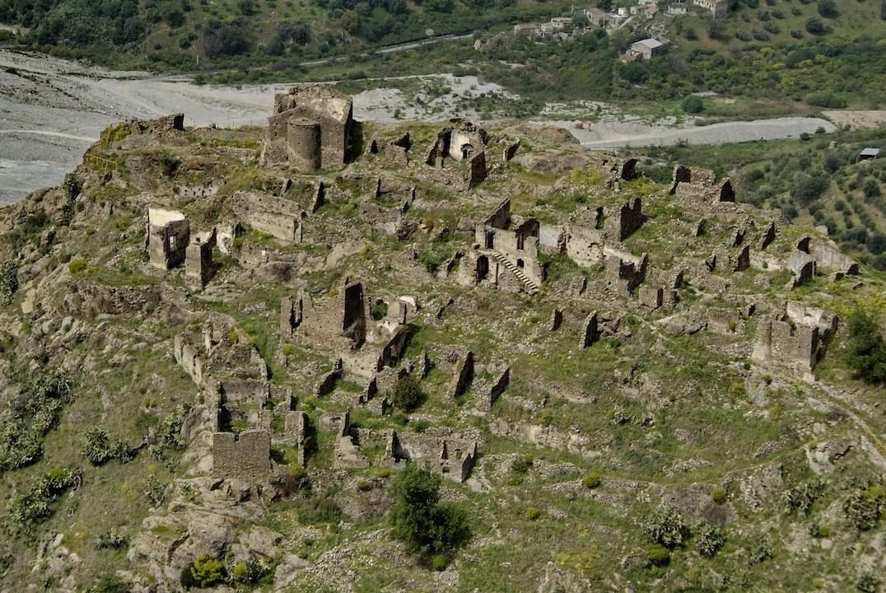

Il borgo di Gallicianò
Pietra, affacci sulla valle e cultura grecanica. Il borgo va attraversato lentamente, partendo dal parcheggio e salendo a piedi.
Una guida per l'ospite finale: arrivo, borgo, Casa Giufà, luoghi principali, percorsi scaricabili e contatti pratici. Una guida pronta da leggere prima dell’arrivo e da usare durante la visita.
Imposta il navigatore su Parcheggio, 89030 Gallicianò RC. Dopo il parcheggio, raggiungi a piedi Via Anaghorio, 89030 Gallicianò RC: Casa Giufà e la zona accoglienza distano circa 90-100 metri.
Casa Giufà è la casa in cui Giuseppe Zindato è nato e cresciuto. Prima di essere un luogo di accoglienza, è stata una casa di famiglia dentro Gallicianò: una casa vissuta tra natura, lavoro, animali, acqua del pozzo e vita semplice.
Da ragazzo Giuseppe scendeva verso il mulino e la fiumara per fare il bagno. Conosceva il borgo non da turista, ma attraverso i passi quotidiani, gli odori della terra, i formaggi, le stalle, il silenzio delle sere e la fatica di una vita essenziale.
Negli anni si è spostato verso Reggio Calabria, dove ha costruito la sua storia come imprenditore nel commercio della frutta e come uomo di sport, arrivando anche ad allenare nel calcio fino alla Serie D. Quando è arrivato il tempo della pensione, ha scelto di tornare alla casa del padre e di recuperarla con sacrificio.
Per questo Casa Giufà non è un alloggio qualunque: è un pezzo di memoria restituito al borgo. La scelta di non avere Wi-Fi e televisione non è un difetto, ma un invito a vivere Gallicianò con lentezza, ascoltando la natura e ritrovando il valore delle cose semplici.
Casa Giufà dispone di due camere su due piani separati. Ogni camera ha entrata indipendente, 1 letto matrimoniale, 1 letto singolo e può ospitare massimo 3 persone. L'intera casa può accogliere fino a 6 ospiti.
Rallentare a Gallicianò non significa fermarsi. Significa tornare presenti. Qui il silenzio non è vuoto: è spazio per ascoltare il borgo, guardare la fiumara, camminare senza fretta e vivere la casa senza il rumore continuo degli schermi.
Casa Giufà non offre televisione e Wi-Fi per una scelta precisa: meno distrazioni, più tempo reale. Quando diminuiscono notifiche, rumore e stimoli continui, l'attenzione torna sui dettagli: il profumo della terra, il pane, i formaggi, gli animali, la luce sulle case, il passo lento tra le pietre.
Questa è una parte dell'esperienza: dormire meglio, parlare di più, sedersi senza dover fare subito qualcos'altro e ricordare Gallicianò non come una tappa veloce, ma come un luogo sentito davvero.

Pietra, affacci sulla valle e cultura grecanica. Il borgo va attraversato lentamente, partendo dal parcheggio e salendo a piedi.

Una tappa breve ma forte: acqua, pietra, memoria e vita quotidiana del borgo.

Uno dei segni identitari più importanti della Calabria Greca, da visitare con rispetto e senza fretta.

Punto panoramico e spazio aperto sulla valle, utile per capire il rapporto tra borgo e paesaggio.

Oggetti, strumenti e memoria materiale della vita locale. Verificare apertura prima della visita.

La casa in cui Giuseppe è nato: memoria familiare, natura, silenzio e punto di partenza per vivere Gallicianò con rispetto.
Sei percorsi reali con traccia GPX scaricabile, file KML per Google My Maps/Earth e pulsante per raggiungere la partenza. Le tracce sono indicative e vanno verificate sul posto: prima di partire controlla condizioni, meteo, accessibilità e segnaletica.
Passeggiata breve nel cuore di Gallicianò: vicoli in pietra, Fontana dell’Amore, scorci sulla valle, chiese e teatro panoramico. È il percorso più adatto agli ospiti appena arrivati.
Partenza: Centro di Gallicianò
Arrivo: Centro di Gallicianò
Nota: Percorso urbano semplice, pensato come orientamento culturale. Segui la traccia con il GPS del telefono e cammina con calma tra i vicoli.
Collegamento escursionistico tra Gallicianò e l’area di Bova, utile per chi vuole camminare tra due luoghi simbolo della Calabria Greca.
Partenza: Gallicianò
Arrivo: Direzione Bova / tracciato PNA 128
Nota: Traccia indicativa da verificare sul posto. Prima di partire controlla condizioni, meteo, accessibilità e segnaletica.
Variante più lunga verso Bova, adatta a escursionisti motivati e allenati. Pianifica anche il rientro prima di partire.
Partenza: Gallicianò
Arrivo: Bova
Nota: Traccia indicativa da verificare sul posto. Porta acqua a sufficienza e valuta le ore di luce disponibili.
Discesa verso Amendolea e la sua fiumara: uliveti, terrazzamenti e il paesaggio che spiega il territorio del borgo.
Partenza: Gallicianò
Arrivo: Amendolea
Nota: Verifica meteo, fondo del sentiero e portata della fiumara prima di eventuali attraversamenti.
Traccia verso uno dei luoghi più suggestivi e delicati dell’area grecanica. Da affrontare con preparazione adeguata.
Partenza: Gallicianò
Arrivo: Roghudi
Nota: Traccia indicativa da verificare sul posto: controlla accessi, condizioni, copertura del segnale e rientro.
Percorso lungo verso il mare, riservato a camminatori esperti: serve pianificazione seria di acqua, tappe e rientro.
Partenza: Gallicianò
Arrivo: Bova Marina
Nota: Solo per escursionisti preparati. Traccia indicativa da verificare sul posto, con pianificazione completa della giornata.
Elisa è il riferimento per disponibilità, appuntamenti e informazioni pratiche. Giuseppe è il riferimento per casa, accoglienza e racconto del luogo. Nizio Paleò resta un riferimento separato per territorio e dove mangiare: verifica sempre disponibilità e orari. Per chi alloggia ad Amici Di Gallicianò Casa Giufà, il menù completo convenzionato costa 25 € a persona invece di 30 €, da confermare al momento della prenotazione. Per foto e piatti, consulta anche la pagina Trattoria Nizio Paleò.